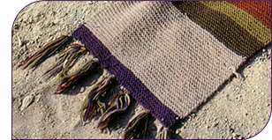

ALTERNATE HERO SCARF
Patterns

THE ALTERNATE SCARF
This scarf is presumed to be worsted weight wool. 60 stitches and 7 tassels have revealed themselves in a very high resolution publicity photograph I acquired (at right). It appears to be 12 to 14 inches wide with larger stitches than the original scarf.
With only 60 stitches, I needed a US #7 needle to reach the gauge for that width and bulk.
Too bad we don't know the whereabouts of this scarf or if there was more than one. These suggestions will only help approximate it, but you could do worse.
THE PUBLICITY SCARF (11/29/2013)
The information regarding this scarf is still a bit sketchy, but there was definitely another scarf that was quite similar to the S15. It never saw any known screen use but appears in photos particularly for Tom's public appearances. The pattern appears to be the S13 portion of the S15 pattern with minor deviations. I had assumed this scarf dropped the only two brown stripes in favor of simplifying to only 6 colors, but a recently acquired photo shows that the brown is there. Instead of the chartreuse of the S15, this publicity scarf uses gold and possibly a lighter purple. No color recommendations are available at this time.
Knitting Techniques and Colors
BLOCKING
This scarf was not stretched in any of its television or publicity photo appearances. A synthetic or wool blend yarn will be a good choice because it might not stretch as much as full wool. This should help maintain the unblocked appearance of the scarf for longer.
If you want to wash your scarf, it is still a good idea to block it anyway. Just make sure to get as much water out of it as possible (gently). Dry it flat after tugging it to the desired dimensions. If it's too long or narrow, try drying it rolled in towels (think cinnamon roll).
TASSELS
7 tassels do not space evenly on 60 stitches. There will be 9 stitches between all but one pair of tassels, which will have 8. All seven colors should be used.
COLORS
With only photos and video to go on, it's not possible to match the colors, but a sensible representation can be made relative to how the original colors appear. The red is close to the same, but the brown and green are obviously darker. The tan seems lighter yet more saturated. The gold has been replaced with a medium, dirty chartreuse. The grey is much lighter and heathered. The purple is either a true purple or a bit blue-violet.
Yarn Recommendations
100% WOOL RECOMMENDATIONS (04/23/2012)
This is in extreme need of an update.
|
red |
Hobby Lobby I Love This Yarn |
170 Terra Cotta (technically 97% wool) |
WOOL BLEND RECOMMENDATIONS (03/12/2011)
The following yarn combination is quite out of date. Please stand by.
It is interesting to note that Patons Decor and Plymouth Encore Worsted are the same yarn. Their content and appearance are quite identical, and they're imported from the same place. There are only so many fiber factories in Hungary/Turkey.
|
red |
Patons Decor |
87532 Rustic |